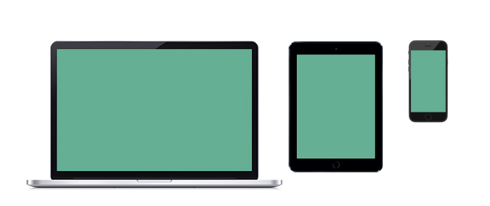

- -Highlight this particular skillset throughout the site
- -Show a video of my process
- -Have an animated graphic of textures?
- -Introduce one piece of work, (captivate the senses)
To do
- -Begin collecting type families that have the look and feel of my site
- -Work from mobile device screen (iphone > ipad > laptop > Desktop)
- -Start collecting content for the site
- -Consider links, "how many clicks"
- -Make note of other websites to connect with (Instagram, Pintrest, Tumblr, Behance, LinkedIn)
- -Draft all pages
Typeface studies
For some odd, inexplicable reason, Amy has become obsessed with Yoda, and his falling habits. Everday she watches Yoda fall. Each time she watches him fall, she laughs. One can conclude that if Yoda were to fall again, she would laugh another time.
For some odd, inexplicable reason, Amy has become obsessed with Yoda, and his falling habits. Everday she watches Yoda fall. Each time she watches him fall, she laughs. One can conclude that if Yoda were to fall again, she would laugh another time.
For some odd, inexplicable reason, Amy has become obsessed with Yoda, and his falling habits. Everday she watches Yoda fall. Each time she watches him fall, she laughs. One can conclude that if Yoda were to fall again, she would laugh another time.
For some odd, inexplicable reason, Amy has become obsessed with Yoda, and his falling habits. Everday she watches Yoda fall. Each time she watches him fall, she laughs. One can conclude that if Yoda were to fall again, she would laugh another time.
For some odd, inexplicable reason, Amy has become obsessed with Yoda, and his falling habits. Everday she watches Yoda fall. Each time she watches him fall, she laughs. One can conclude that if Yoda were to fall again, she would laugh another time.
For some odd, inexplicable reason, Amy has become obsessed with Yoda, and his falling habits. Everday she watches Yoda fall. Each time she watches him fall, she laughs. One can conclude that if Yoda were to fall again, she would laugh another time.
For some odd, inexplicable reason, Amy has become obsessed with Yoda, and his falling habits. Everday she watches Yoda fall. Each time she watches him fall, she laughs. One can conclude that if Yoda were to fall again, she would laugh another time.
For some odd, inexplicable reason, Amy has become obsessed with Yoda, and his falling habits. Everday she watches Yoda fall. Each time she watches him fall, she laughs. One can conclude that if Yoda were to fall again, she would laugh another time.
For some odd, inexplicable reason, Amy has become obsessed with Yoda, and his falling habits. Everday she watches Yoda fall. Each time she watches him fall, she laughs. One can conclude that if Yoda were to fall again, she would laugh another time.
For some odd, inexplicable reason, Amy has become obsessed with Yoda, and his falling habits. Everday she watches Yoda fall. Each time she watches him fall, she laughs. One can conclude that if Yoda were to fall again, she would laugh another time.
For some odd, inexplicable reason, Amy has become obsessed with Yoda, and his falling habits. Everday she watches Yoda fall. Each time she watches him fall, she laughs. One can conclude that if Yoda were to fall again, she would laugh another time.
For some odd, inexplicable reason, Amy has become obsessed with Yoda, and his falling habits. Everday she watches Yoda fall. Each time she watches him fall, she laughs. One can conclude that if Yoda were to fall again, she would laugh another time.
For some odd, inexplicable reason, Amy has become obsessed with Yoda, and his falling habits. Everday she watches Yoda fall. Each time she watches him fall, she laughs. One can conclude that if Yoda were to fall again, she would laugh another time.
For some odd, inexplicable reason, Amy has become obsessed with Yoda, and his falling habits. Everday she watches Yoda fall. Each time she watches him fall, she laughs. One can conclude that if Yoda were to fall again, she would laugh another time.
Social Media Icons
Landing Page
- Top Navigation Bar
- - About
- - Contact
- - Portfolio
- Header
-
- - Full Name
- Body: Portfolio
- - Lemon Recipes
- - Elements of Style
- - Youth Design Poster
- - Pathfinding Map Cards
- - 100 Things Poster & App
- - Sketchbooks
- Footer
- - Section: Mini "About Me"
- - Section: Follow Me Icons
- - Section: Mini "Contact Me"
About Me
- Top Navigation Bar
- - About
- - Contact
- - Portfolio
- Header
-
- - A MassArt Student
- Body: Who Am I
- - School(s)
- - Internships
- - Interests
- Footer
- - Section: Mini "About Me"
- - Section: Follow Me Icons
- - Section: Mini "Contact Me"

Designing Across Platforms